Python Testing like a Pro
Coding test-driven Python package
with CI and Cloud
Keith Yang
2017 August
Python Testing like a Pro 🚀
Keith Yang
Formosat-5 launching
Coding test-driven Python package with CI and cloud
My talk in PyCon APAC 2017
@keitheis
alog v.s. OpenStack
Difference?
keithis/alog <master>
% find . -name '*.py' | xargs cat | wc -l
418
Total 418 Python lines of code in alog
Versus Over 20,000,000 Lines
of Code of
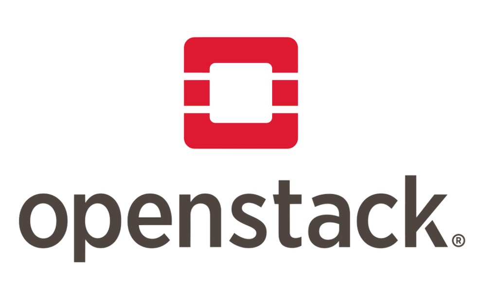The same part: BUG FREE!?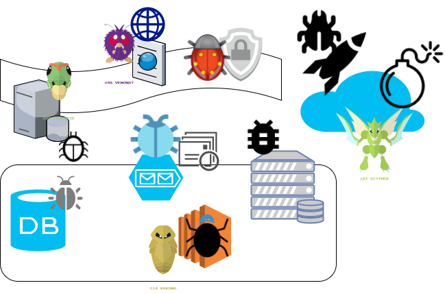
Keith Yang
Software Engineering Artisan
Caring from code, tesitng, to delivery on Web & Cloud
Founder of @Taipeipy since 2012
Chairpersion of PyCon APAC 2015
Cloud Senior Engineer in iCHEF
Abstract
- Perspectives and categories of software testing
- Abstract workflow and concepts
- Pragmatic tools and some tips
Expected Experience
- Tested app and/or code
- Unit Testing
- Continuous Integration (CI)
- Plus: heard of
- Test-driven Development (TDD)
- Continuous Delivery (CD)
For participating a serious project
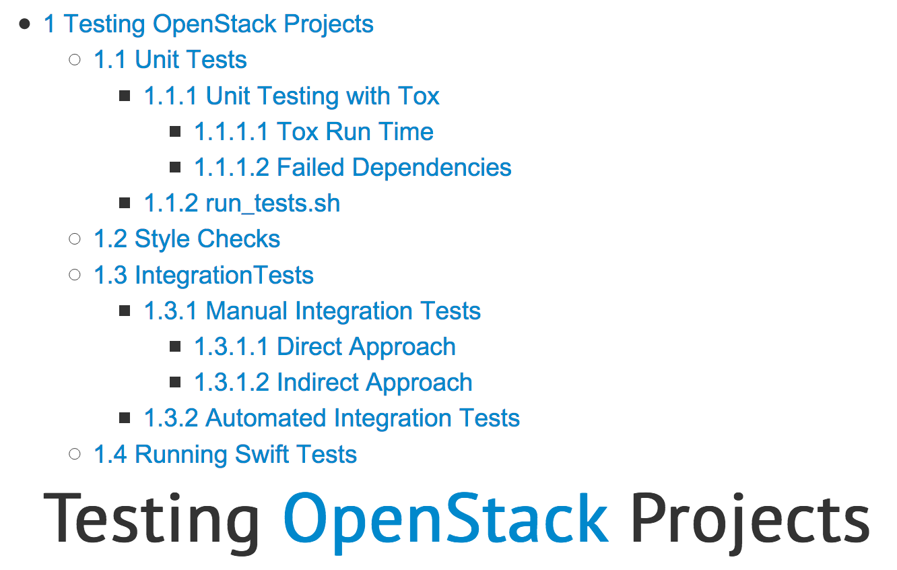Testing in an OpenStack project
- Unit Tests
- Style Checks
- Integration Tests
- Product Tests
Note
Some terms marked in the following slides for easier remember while going through slides.
Software Application Categories
| Accounting | Airline | Banking | Commerce |
| Compiler | Protocols | Cryptography | Embedded system |
| Finance | Games | Manufacturing | Music |
| Science | Training | Voting | Web browser |
| Router | Cloud architecture | OS | Robotic |
| Image, speech, or handwriting processing |
Software Testing Topic
- Scope 🗺
- Functional vs non-functional testing
- Defects and failures
- Static vs dynamic testing
- Software testing ream
Testing Methods
Box approach- White box
- Black box
- Grey box testing
Testing levels
- Unit testing
- Integration testing
- System testing
- System integration testing
- Regression testing
- Alpha and Beta testing
Non-functional testing
- Performance and load testing
- Stability testing
- Usability testing
- Security testing
- Internationalization and localization
- Destructive testing
Testing Process
- Traditional CMMI or waterfall development model
- Agile or Extreme development model
- A sample testing cycle
No enough experience?
Not really a blocking problem!
Concept Confirm Action Success
Use Email, IM notification
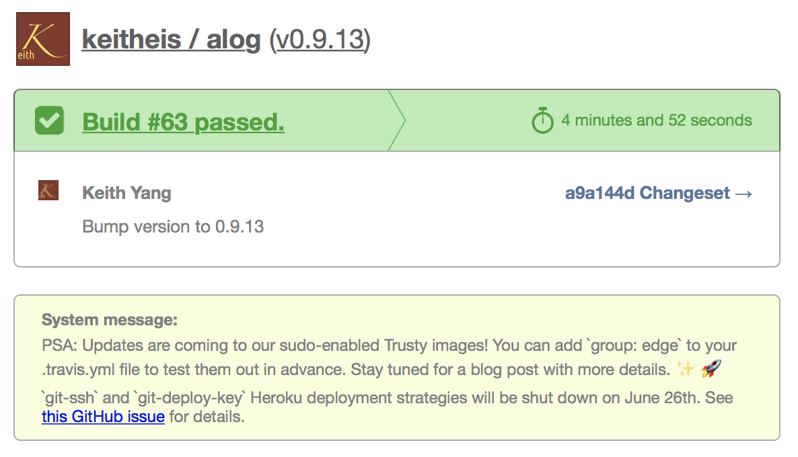Concept Alert on Broken
Use Email, SMS notification
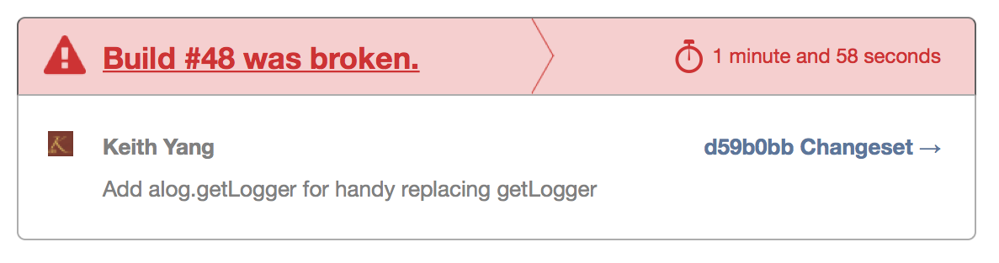NO, it's me! Ask me to fix it!
Coverages Report on Codecov
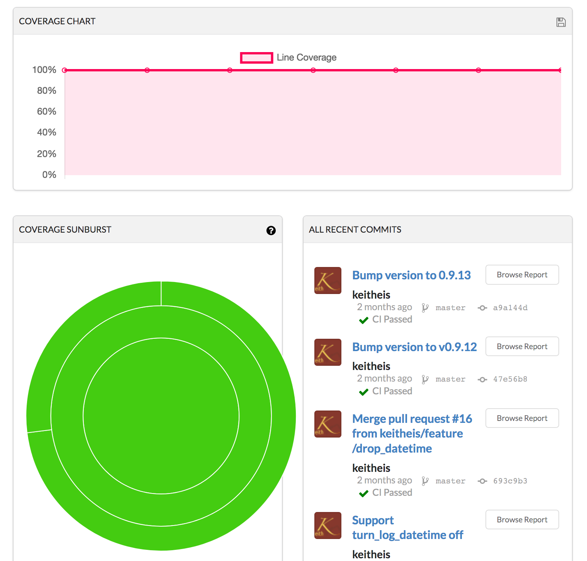Files coverage of alog on Codecov
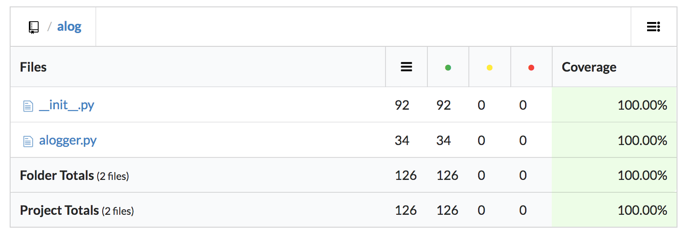It looks 100% good.
Lines coverage of alog module
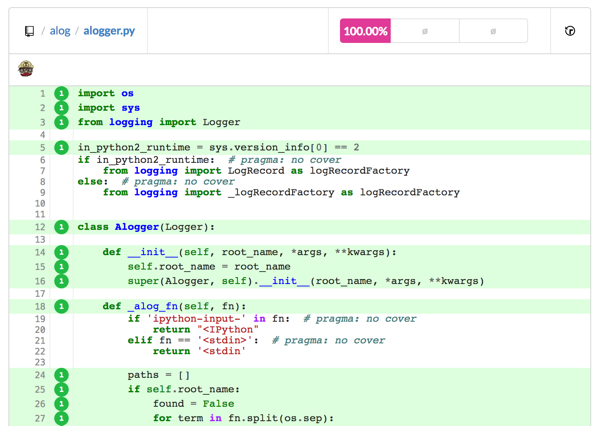Coverage 💯 %?
- Some lines marked ignored from coverage
- Not integration tests
- Totally NOT bug free
- Most lines were executed
Package ready on (new) PyPI
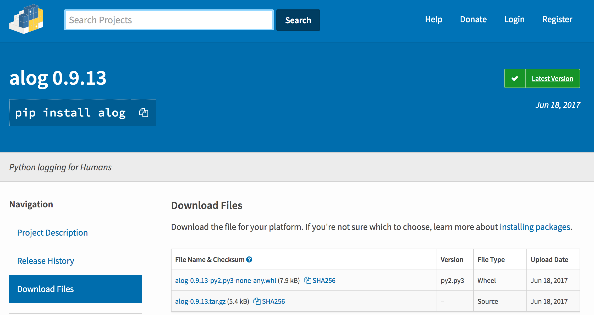 tox-dev/tox
virtualenv management and test command line tool
# content of: tox.ini , put in same dir as setup.py
[tox]
envlist = py26,py27
[testenv]
deps=pytest # install pytest in the venvs
commands=pytest # or 'nosetests' or ...
tox-dev/tox
virtualenv management and test command line tool
- Environment list
- Dependences
- Commands
tox.ini of alog
[tox]
envlist =
py27,py33,py34,py35,py36,pypy,
{py2,py3}-cover,coverage
[testenv]
basepython =
py27: python2.7
...
py36: python3.6
pypy: pypy
py2: python2.7
py3: python3.4
Services Automation by GitHub
- Webhooks
- Integrations & services
- There are alternatives!
.travis.yml of alog
...
install:
- travis_retry pip install tox
script:
- travis_retry tox
after_success:
- bash <(curl -s https://codecov.io/bash)
notifications:
email:
- yang@keitheis.org
.travis.yml of alog
- Install Tox
- Test script
tox - Run command after success
- Notifications
Tips of using Travis CI
- Use Tox for diff envs
travis_retry- Network timeout
- Or unknown reasons
- See Common Build Problems on its website
- Email notification
Wait...
how about Jenkins?
Fun Facts of Jenkins
- Originally developed as the Hudson project.
- Started in summer of 2004 at Sun Microsystems.
- First released in java.net in Feb. 2005.
https://en.wikipedia.org/wiki/Jenkins_(software)
Swift builds on Jenkins
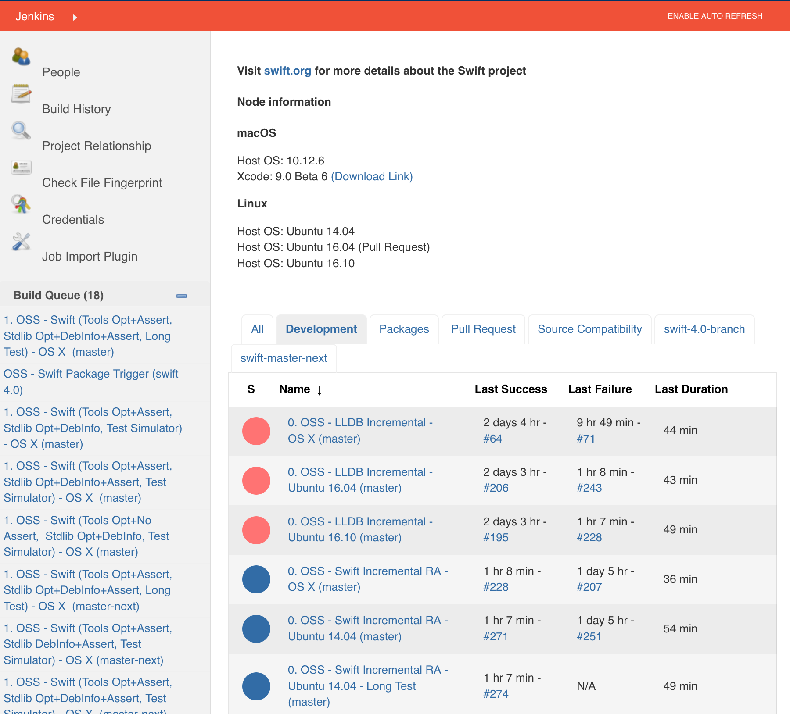Code Coverage and Test Trend
on Jenkins
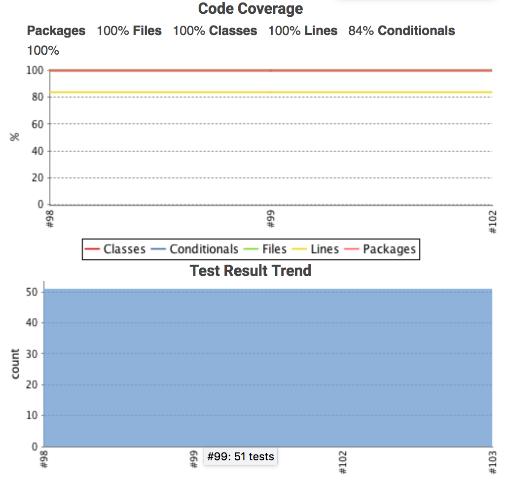Tips of Coverage on Jenkins
- Fail the build if coverage obviously dropped
- Use Docker (if suitable to the software) for testing multiple pull-requests testing parallelly
- Let Jenkins do the deployment to share the knowhow
- Fully CI/CD autumation isn't far far away
Keep failures before release
It's really hard.
After release:
Even AWS Serveless Can Fail
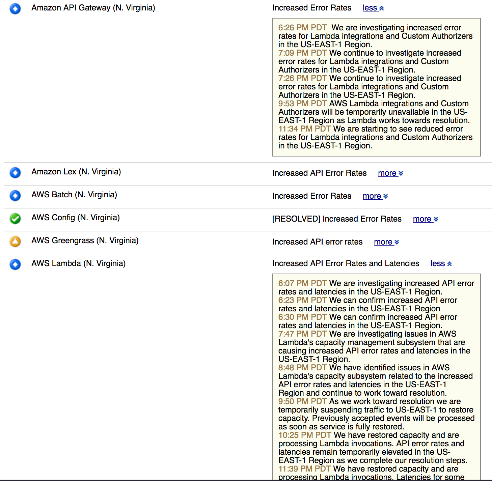
My HeardBleed with OpenSSL
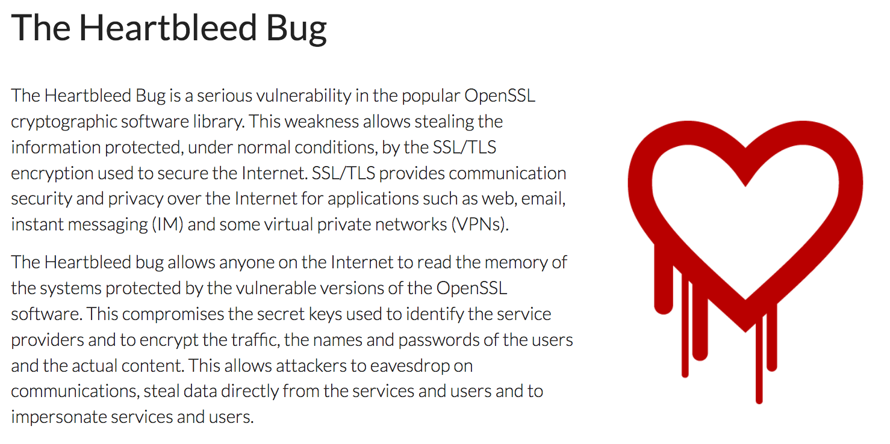
A Little Less Surprise?
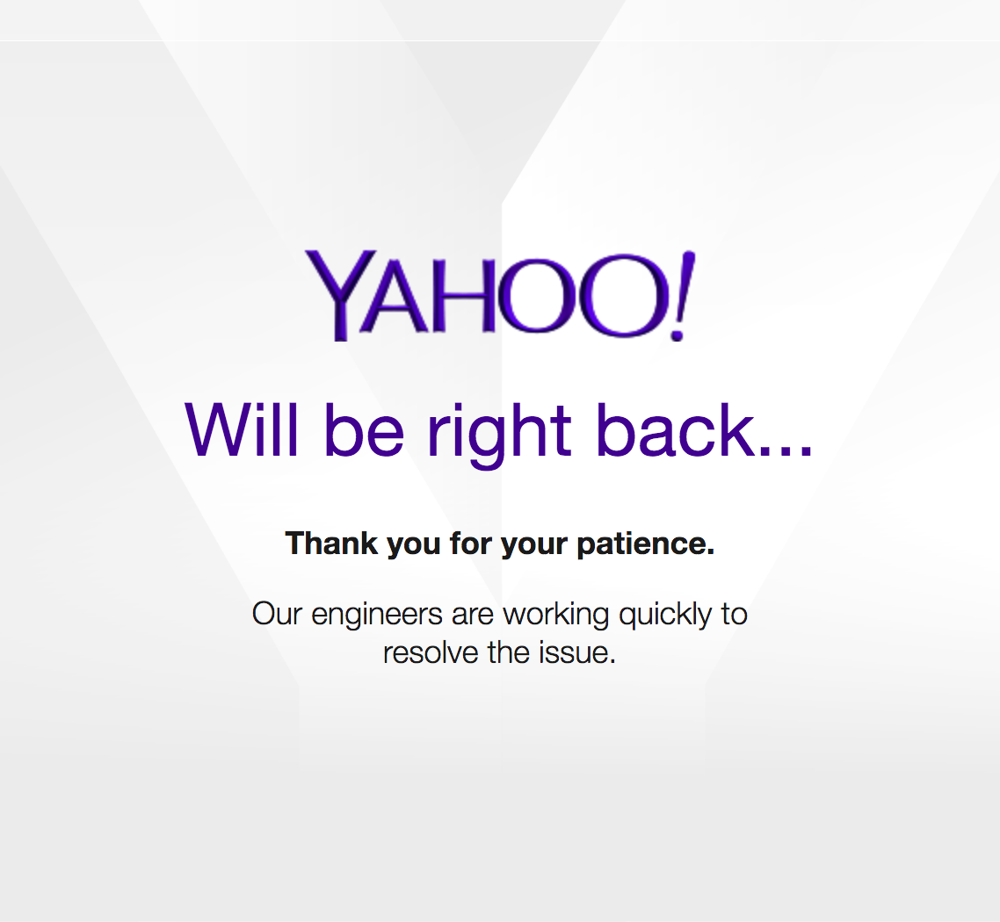
Forget it,
lets go back to CODE!
Back to Python World Finally!
2 strategieswill be focus here
Strategy 1. Show Me Errors Early
Some tools- IPython
- Code Linter on IDE/Editors/CI
- yapf
- py.test
- hyposesis
IPython (& Jupyter Notebook)
- Evaluate behaviors step by step
- Explore current environment and variables
- Consider use pdb for exceptions
Step by Step Extension
Tip: Install IPython first
- Pyramid
pshell --development.ini pyramid_debugtoolbar & pyramid_ipython- Django Debug Toolbar
- Django
python manage.py shell
Code Linter on IDE/Editors/CI
Super helpful for human typo
- Vim: syntastic, ale (with
flake8) - Sublime Text Linter
- Most IDEs: built-in
Concept: WYSWYG
What you see is what you get
See it right right away!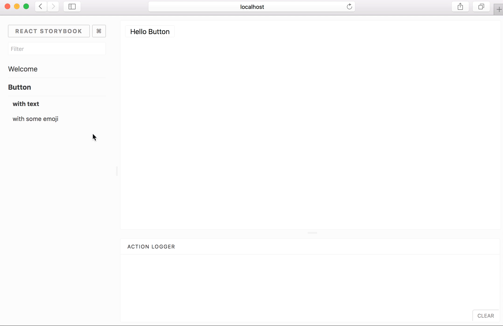
google/yapf
... based off of 'clang-format' ... In essence, the algorithm takes the code and reformats it to the best formatting that conforms to the style guide, ...
even if the original code didn't violate the style guide.
Tips of using yapf
- Can be used to format thoudsands of legacy Python code that is hard to read by our PEP8 built-in eyes.
- Many options including Google and Facebook style to taste
YAPF is not an official Google product (experimental or otherwise), it is just code that happens to be owned by Google.
py.test
makes it easy to write small tests, yet scales to support complex functional testing for applications and libraries.
Tips of using py.test
- Use it even
Python and Django built-in unittest - Super handy to test a single module
by pytest app/tests/test_a_single.py - with
pytest-cov and --junitxml for Jenkins - with
--lf to just test last failures
hyposesis
... lets you write tests which are parametrized by a source of examples, and then generates simple and comprehensible examples that make your tests fail.
hyposesis
@given(st.lists(
st.floats(allow_nan=False,
allow_infinity=False), min_size=1))
def test_mean(xs):
assert min(xs) <= mean(xs) <= max(xs)
Falsifying example: test_mean(
xs=[1.7976321856e+308, 6.102322755e+303]
)
Many to discover
freezegun - Fix tesing utc.now!Faker - generate useful fake valuesvcrpy - recording API resultspip-tools - separate testing requirements- ...
Tips of mock
- Python 3 built-in
pip install mock- Let you focus on current pargs while fighting messy legacy code
Assert it works before and mock it with success result
Strategy 2. Let Me Debug Easily
- Sentry - logging runtime erros
- IPython - have it on production
- alog - have it on production
and benefit from it during development and testing
Tips of Sentry
- Separate different environments on Sentry by Sentry project - much eaiser to see urgent errors and debug
- Can be great to have while working on legacy
👉 Integrate it during development
Prepare most error handles during development
You can invest the minimal time cost for maximum gain by paying attention during development
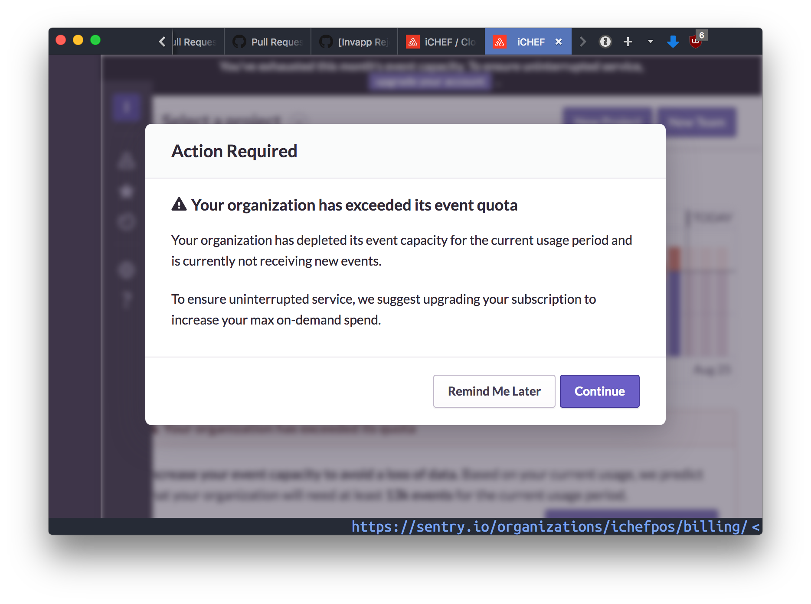Some References
- Test-Driven Python Development
- Test-Driven Development with Python, 2nd Edition
- Code Complete (2nd edition)
- Building for Failure: Learning lessons from aviation by @andrewgodwin
Summary
- Prepare your testing strategies
- With best tools to help the workflow
- Let errors be found as early as possible
- Prepare runtime failures
No tested backup plan?
equals no backup